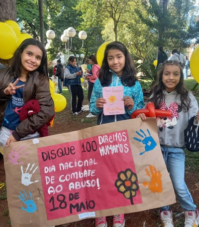

MAIO LARANJA 2023
Há 50 anos, no dia 18 de Maio de 1973, a menina Araceli, de 08 anos, foi sequestrada enquanto ia para a escola, foi drogada, estuprada e morta por jovens de classe média alta na cidade de Vitória (ES). O crime, que teve grande repercussão e chocou o país à época, permanece impune até hoje.
Com o objetivo de convocar toda a sociedade para se mobilizar para o compromisso de proteger as crianças e adolescentes, a partir do ano 2000, o dia 18 de maio passou a ser considerado o Dia Nacional de Combate ao Abuso e à Exploração Sexual de Crianças e Adolescentes: LEI No 9.970.
A Constituição Federal e o Estatuto da Criança e do Adolescente garantem à toda criança e adolescente o direito à liberdade, ao respeito e à dignidade, que devem ser assegurados pela família, pelo Estado e pela sociedade, além de colocá-las/os a salvo de exploração, violência, crueldade e opressão.
É importante saber identificar as situações violência sexual contra crianças e adolescentes e denunciar nos canais apropriados. Qualquer pessoa pode denunciar! O abuso sexual é entendido como toda ação que se utiliza da criança ou da/o adolescente para fins sexuais, seja conjunção carnal ou outro ato libidinoso, realizado de modo presencial ou por meio eletrônico, para estimulação sexual da/o agente ou de terceira/o.
A exploração sexual se relaciona diretamente com situações de vulnerabilidade evidenciadas pelo envolvimento de uma moeda de troca, seja dinheiro, objeto de valor ou mercadoria, como pagamento à vítima em troca da violência.
DISQUE 100
É um serviço nacional, funciona 24 horas por dia, incluindo sábados, domingos e feriados. As ligações podem ser feitas de todo o Brasil gratuitamente.
DISQUE 125
É um serviço municipal de plantão do Conselho Tutelar de Londrina.
Data da Publicação: 4 de julho de 2023